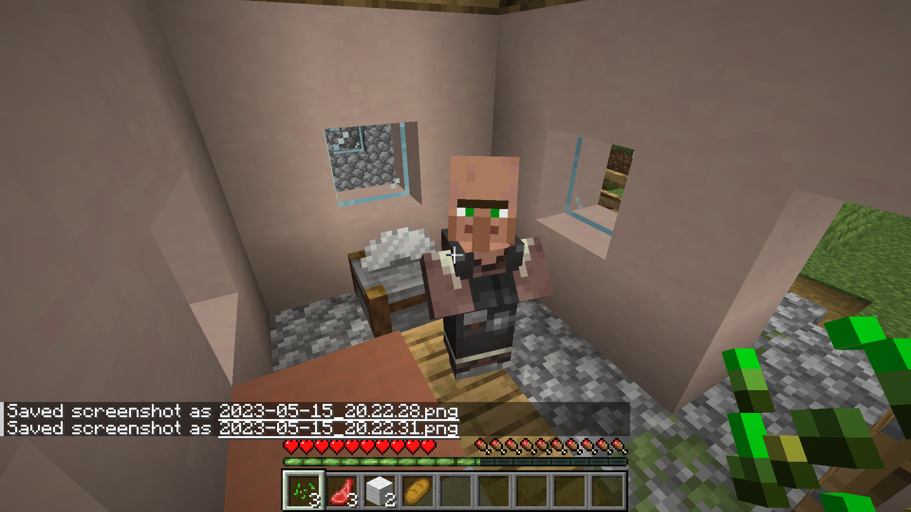
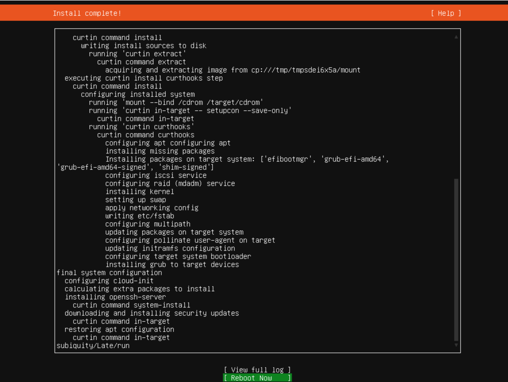
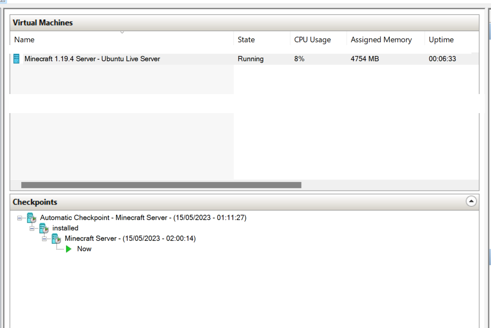

Managing a Minecraft server maze
Being ok with many hats

Context
I had a very busy weekend with my kids. Climbing, swimming, biking, footballing, bbqing, Minecrafting, tidying, gardening, entertaining, cooking. Exhausting! What’s worse I hardly sleeping with so much stress and work and outside work too.
Anyhow, my kids are now totally immersed in Minecraft (1.19.4 java edition). Most their friends are too, and they all want to play together.
We’ve previous used the ‘Join on Lan’ feature but this is reliant on the host always being connected, we’ve explored hosting options, e.g. using old Linux laptop (too slow / 32bit), buying a server (too expensive), or using a third-party tool (Curseforge, MultiMC). Some are ok, but none have been ideal.
In the latest attempt to get a reliable server working for the local network, I’ve tried the Windows 11 VM tool. It works for now, as many of their mc friends can join the network. It isn’t reliant on external hosting on a third party server/website, and less problems with online chat.
This took quite a bit of reading around various articles, testing the options, but here is a working set-up!
Hope you enjoy it.
Install and run Minecraft Server 1.19.4 for local network access on Windows VM HyperVisor Ubuntu 22.04 - Step-by-step guide
Index:
- Dependencies
- Ubuntu Live Server
- SSH
- Create new root account
- System hardening
- Ubuntu firewall
- Java
- Minecraft Server
- Supervisor
- Screens
- Test it works
- Internet server
System Setup
Dependencies
- 8gb+ RAM
- Enough HDD memory
- Installation of Windows 10 or 11
- Install WSL2
- Enable Windows Developer features
- Enable Hyper-V and Hypervisor
Ubuntu Live Server
- Download Ubuntu Live Server iso from here
- Recommend LTS version (currently 22.04)
- Open Hypervisor… Quick Create.. Select .iso file
Enter the VM launch settings:
- 4-8gb RAM
- 10-25gb HDD (depends how many worlds or mods you want)
- Enable network adapter (WIFI for local network IP, Default for internet-facing IP)
- Click start
Ubuntu Installation settings:
- English/English
- Enable dynamic RAM
- Click remove the ‘CD/DVD Drive’ in Hyper-V, click continue on installer if you get the red error message
- Install third-party packages
- Eventually installing Ubuntu Server is completed, Reboot

After installation:
- Login with root user/password
sudo apt install wget net-tools
sudo apt updateUbuntu firewall
- Setup UFW firewall rules to allow only traffic on SSH (22) and the default Minecraft (25565) ports:
# sudo ufw --version
# sudo apt-get install ufw
sudo ufw default deny
sudo ufw allow from 192.168.1.0/24 to any port 22
#only open to local network
sudo ufw allow from 192.168.1.0/24 to any port 25565
#only open to local network
sudo ufw enable
# Command may disrupt existing ssh connections. Proceed with operation (y|n)? yENTER
ufw status verbose
ufw reload SSH
Connect via SSH with PuTTY with IP and password on port 22
Why bother? because using HyperV the copy-and-paste doesn’t work on Ubuntu Live Server VM, even with Guest Service enabled
Alternatively, generate a new ssh key in the terminal, and export ssh keys and use those to connect
ssh-keygenCreate new root account
sudo -su root
adduser minecraft
usermod -aG sudo minecraft
su - minecraftSystem hardening
Enable SWAP, to allow the system to use more memory/ram if required
sudo swapon -s
sudo fallocate -l 4g /swap
sudo chmod 0600 /swap
sudo mkswap /swap
sudo swapon /swap
sudo echo '/swap none swap defaults 0 0' | sudo tee -a /etc/fstab
sudo free -mChange the initial root password to a private and strong one, such as r00tyHafs3t334vM%2ka$8E3:
sudo echo 'root:r00tyHafs3t334vM%2ka$8E3' | sudo chpasswd && history -d -1Create a non-root user account with sudo privileges, such as mcninja, and then also set up a strong password for it, such as sud04QeXaedgad3435gae#6&Cw:
sudo useradd -ms /bin/bash mcninja
sudo echo 'mcninja:sud04QeXaedgad3435gae#6&Cw' | sudo chpasswd && history -d -1
sudo echo 'mcninja ALL=(ALL) NOPASSWD: ALL' | sudo tee -a /etc/sudoers.d/designated
sudo chmod 0440 /etc/sudoers.d/designatedAt this point it is probably safe to delete any other accounts you have set up with less-secure passwords
Update the system, and then reboot:
sudo apt update
sudo apt upgrade -y
sudo apt autoremove -y
sudo shutdown -r nowJava
Minecraft Java Edition server 1.18.2 requires Java 17.
sudo add-apt-repository ppa:openjdk-r/ppa
sudo apt update
sudo apt install openjdk-17-jre-headless -y
java --versionMinecraft Server
sudo mkdir /opt/minecraft
sudo chown mcninja:mcninja /opt/minecraft
cd /opt/minecraft
sudo wget https://piston-data.mojang.com/v1/objects/8f3112a1049751cc472ec13e397eade5336ca7ae/server.jar -O minecraft_server.1.19.4.jar
echo "eula=true" > /opt/minecraft/eula.txt
Supervisor
sudo apt install supervisor -y
supervisord -vStart the Supervisor service:
sudo systemctl daemon-reload
sudo systemctl start supervisor.service
sudo systemctl enable supervisor.serviceCreate a Supervisor configuration file for the Minecraft Java Edition server:
sudo nano /etc/supervisor/conf.d/minecraft.confPopulate the file with:
[program:minecraft]
directory=/opt/minecraft/
command=java -Xms1024M -Xmx4G -jar /opt/minecraft/minecraft_server.1.19.4.jar nogui
user=mcninja
autostart=true
autorestart=true
stderr_logfile=/var/log/supervisor/error_minecraft.log
stderr_logfile_maxbytes=100MB
stdout_logfile=/var/log/supervisor/out_minecraft.log
stdout_logfile_maxbytes=100MB
Load the Minecraft Java Edition server configuration file:
sudo supervisorctl reread
sudo supervisorctl updateDetermine if the Minecraft Java Edition server is up and running:
tail -f /var/log/supervisor/out_minecraft.logScreens
Use Screens to manage several processes (e.g. chat log, server log, updating settings, updates):
sudo apt install screen
screen -S "Minecraft Server"
screen -listTo exit the screen session, press CTRL + A then D. To resume the screen session, run:
screen -r XXXX # to resume a screenTest it works!
Direct connect on the local ip address: 192.168.0.XX
Change the server settings
sudo nano /opt/minecraft/server.propertiesEdit settings if required before launch
Let’s take a closer look at some of the most important properties in this list:
- difficulty (default easy) - This sets the difficulty of the game, such as how much damage is dealt and how the elements affect your player. The options are peaceful, easy, normal, and hard.
- gamemode (default survival) - This sets the gameplay mode. The options are survival, creative,adventure, and spectator.
- level-name (default world) - This sets the name of your server that will appear in the client. Special characters such as apostrophes may need to be preceded by a backslash. This is known is escaping characters, and is common practice when special characters may not otherwise be parsed correctly in context.
- motd (default A Minecraft Server) - The message that is displayed in the server list of the Minecraft client.
- pvp (default true) - Enables Player versus Player combat. If set to true, players will be able to engage in combat and damage each other.
- online-mode - True enables non-premium players to log in to your Minecraft server

Internet server
It would probably be possible to open the VM to the internet securely, by changing the VM Network to Default, then changing the UFW firewall settings
sudo ufw allow 22 # open VM SSH to internet traffic
sudo ufw allow 25565 #open port to internet trafficIt is maybe/probably possible to route minecraft traffic maybe open ipv4 port forward on the router settings, or use an ipv6 pin hole port. Even, maybe get a cheap/free domain to point at the server and fix the IP address for the machine.
At this point, though, given the additional security effort required and cost it would probably be worth just buying a paid-for and ready-to-use Minecraft server. Or following the above process on AWS using EC2 Small/Medium size Ubuntu server.
Sources
- https://www.vultr.com/docs/how-to-install-a-minecraft-server-on-debian-11/
- https://www.digitalocean.com/community/tutorials/how-to-create-a-minecraft-server-on-ubuntu-22-04
- https://www.vultr.com/docs/how-to-install-a-minecraft-server-on-ubuntu-20-04/